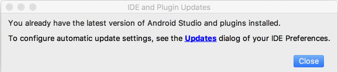
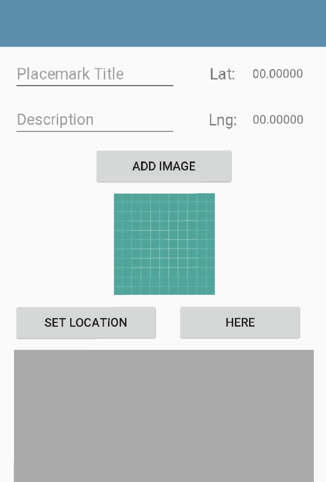
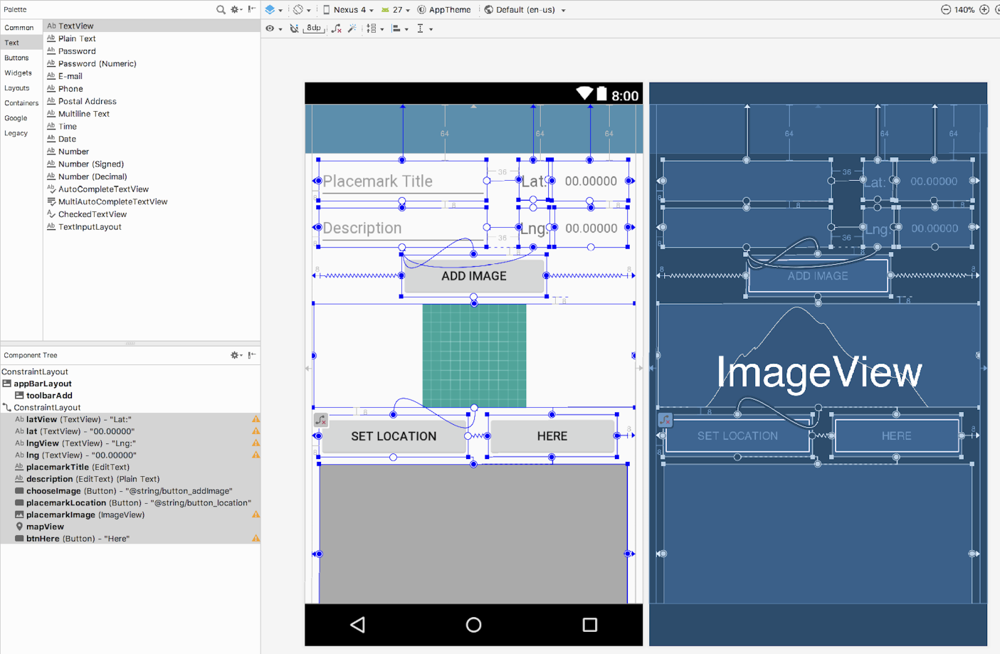
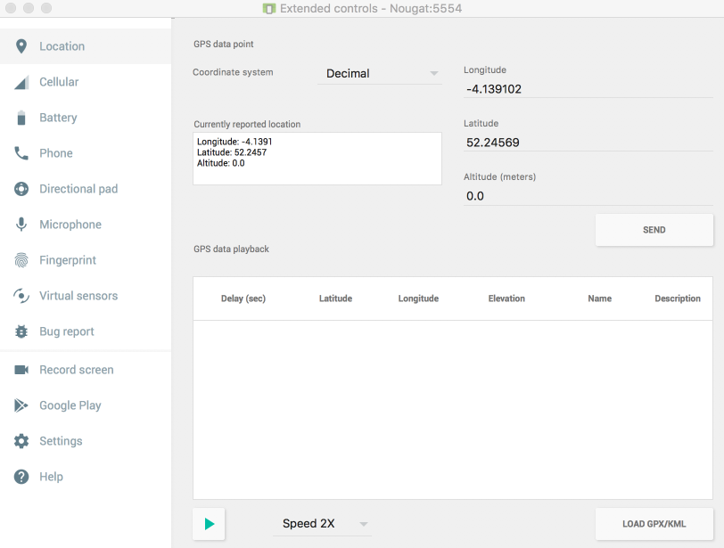

Before proceeding, make sure you are using the latest version of Android Studio. In the Check for updates menu, you should see:

If not, accept updates until Studio is up to date.
Revise the main project build.gradle to include a set of variables to hold all version numbers for the project:
buildscript {
ext.kotlin_version = '1.2.31'
ext.gradle_version = '3.1.0'
ext.app_compat_version = '26.1.0'
ext.design_library_version = '26.1.0'
ext.support_library_version = '26.1.0'
ext.cardview_library_version = '26.1.0'
ext.constraint_layout_version = '1.0.2'
ext.anko_version = '0.10.4'
ext.anko_commons_version = '0.10.4'
ext.play_services_maps_version = '12.0.1'
ext.play_services_location_version = '12.0.1'
ext.room_version = '1.0.0'
repositories {
google()
jcenter()
}
dependencies {
classpath "com.android.tools.build:gradle:$gradle_version"
classpath "org.jetbrains.kotlin:kotlin-gradle-plugin:$kotlin_version"
}
}
allprojects {
repositories {
google()
jcenter()
}
}
task clean(type: Delete) {
delete rootProject.buildDir
}Make sure this build.grade in the project home folder, not the one in the app folder.
Now we can replace the app/build.gradle with this version, which uses the version identifiers above:
apply plugin: 'com.android.application'
apply plugin: 'kotlin-android'
apply plugin: 'kotlin-android-extensions'
apply plugin: "kotlin-kapt"
android {
compileSdkVersion 26
defaultConfig {
applicationId "org.wit.placemark"
minSdkVersion 23
targetSdkVersion 26
versionCode 1
versionName "1.0"
testInstrumentationRunner "android.support.test.runner.AndroidJUnitRunner"
}
buildTypes {
release {
minifyEnabled false
proguardFiles getDefaultProguardFile('proguard-android.txt'), 'proguard-rules.pro'
}
}
}
androidExtensions {
experimental = true
}
dependencies {
implementation fileTree(dir: 'libs', include: ['*.jar'])
implementation "org.jetbrains.kotlin:kotlin-stdlib-jre7:$kotlin_version"
implementation "com.android.support:appcompat-v7:$app_compat_version"
implementation "com.android.support.constraint:constraint-layout:$constraint_layout_version"
implementation "com.android.support:design:$design_library_version"
implementation "com.android.support:cardview-v7:$cardview_library_version"
implementation "org.jetbrains.anko:anko:$anko_version"
implementation "org.jetbrains.anko:anko-commons:$anko_commons_version"
implementation "com.google.android.gms:play-services-maps:$play_services_maps_version"
implementation "com.google.android.gms:play-services-location:$play_services_location_version"
implementation "android.arch.persistence.room:runtime:$room_version"
annotationProcessor "android.arch.persistence.room:compiler:$room_version"
kapt "android.arch.persistence.room:compiler:$room_version"
testImplementation 'junit:junit:4.12'
androidTestImplementation 'com.android.support.test:runner:1.0.1'
androidTestImplementation 'com.android.support.test.espresso:espresso-core:3.0.1'
}The upgrades will break one of the kotlins sources - which must be fixed before a successful build:
package org.wit.placemark.room
import android.arch.persistence.room.*
import org.wit.placemark.models.PlacemarkModel
@Dao
interface PlacemarkDao {
@Insert(onConflict = OnConflictStrategy.REPLACE)
fun create(placemark: PlacemarkModel)
@Query("SELECT * FROM PlacemarkModel")
fun findAll(): List<PlacemarkModel>
@Query("select * from PlacemarkModel where id = :id")
fun findById(id: Long): PlacemarkModel
@Update
fun update(placemark: PlacemarkModel)
@Delete
fun deletePlacemark(placemark: PlacemarkModel)
}The only change here is this line:
@Query("select * from PlacemarkModel where id = :id")arg0 has been replaced with id - as the kotlin room implementation has been aligned with the other tools.
Do a Build->Clean - and then a Build->Rebuild of the project. You may also consider uninstalling/reinstalling the app.
Extend the PlacemarkActivity layout to display Latitude/Longitude values:

This is constrained as follows:

<?xml version="1.0" encoding="utf-8"?>
<android.support.constraint.ConstraintLayout
xmlns:android="http://schemas.android.com/apk/res/android"
xmlns:app="http://schemas.android.com/apk/res-auto"
xmlns:tools="http://schemas.android.com/tools"
android:layout_width="match_parent"
android:layout_height="match_parent"
tools:context="org.wit.placemark.activities.PlacemarkActivity">
<android.support.design.widget.AppBarLayout
android:id="@+id/appBarLayout"
android:layout_width="match_parent"
android:layout_height="wrap_content"
android:background="@color/colorAccent"
android:fitsSystemWindows="true"
app:elevation="0dip"
app:theme="@style/ThemeOverlay.AppCompat.Dark.ActionBar">
<android.support.v7.widget.Toolbar
android:id="@+id/toolbarAdd"
android:layout_width="match_parent"
android:layout_height="wrap_content"
app:titleTextColor="@color/colorPrimary" />
</android.support.design.widget.AppBarLayout>
<android.support.constraint.ConstraintLayout
android:layout_width="match_parent"
android:layout_height="600dp"
android:layout_marginEnd="8dp"
android:layout_marginStart="8dp"
app:layout_constraintEnd_toEndOf="parent"
app:layout_constraintHorizontal_bias="0.0"
app:layout_constraintStart_toStartOf="parent"
app:layout_constraintTop_toTopOf="parent">
<TextView
android:id="@+id/latView"
android:layout_width="34dp"
android:layout_height="45dp"
android:layout_marginStart="36dp"
android:layout_marginTop="64dp"
android:gravity="center"
android:text="Lat:"
android:textSize="18sp"
app:layout_constraintStart_toEndOf="@+id/placemarkTitle"
app:layout_constraintTop_toTopOf="parent" />
<TextView
android:id="@+id/lat"
android:layout_width="87dp"
android:layout_height="46dp"
android:layout_marginEnd="8dp"
android:layout_marginStart="8dp"
android:layout_marginTop="64dp"
android:gravity="center"
android:text="00.00000"
android:textAlignment="center"
android:textSize="14sp"
app:layout_constraintEnd_toEndOf="parent"
app:layout_constraintHorizontal_bias="0.5"
app:layout_constraintStart_toEndOf="@+id/latView"
app:layout_constraintTop_toTopOf="parent" />
<TextView
android:id="@+id/lngView"
android:layout_width="35dp"
android:layout_height="45dp"
android:layout_marginStart="36dp"
android:gravity="center"
android:text="Lng:"
android:textAlignment="center"
android:textSize="18sp"
app:layout_constraintBottom_toBottomOf="@+id/description"
app:layout_constraintStart_toEndOf="@+id/description" />
<TextView
android:id="@+id/lng"
android:layout_width="83dp"
android:layout_height="45dp"
android:layout_marginEnd="8dp"
android:layout_marginStart="4dp"
android:layout_marginTop="8dp"
android:gravity="center"
android:text="00.00000"
android:textAlignment="center"
android:textSize="14sp"
app:layout_constraintEnd_toEndOf="parent"
app:layout_constraintHorizontal_bias="0.5"
app:layout_constraintStart_toEndOf="@+id/lngView"
app:layout_constraintTop_toBottomOf="@+id/lat" />
<EditText
android:id="@+id/placemarkTitle"
android:layout_width="191dp"
android:layout_height="wrap_content"
android:layout_marginStart="8dp"
android:layout_marginTop="64dp"
android:ems="10"
android:hint="@string/hint_placemarkTitle"
android:inputType="text"
app:layout_constraintStart_toStartOf="parent"
app:layout_constraintTop_toTopOf="parent" />
<EditText
android:id="@+id/description"
android:layout_width="191dp"
android:layout_height="45dp"
android:layout_marginStart="8dp"
android:layout_marginTop="8dp"
android:ems="10"
android:hint="@string/hint_placemarkDescription"
android:inputType="textPersonName"
app:layout_constraintStart_toStartOf="parent"
app:layout_constraintTop_toBottomOf="@+id/placemarkTitle" />
<Button
android:id="@+id/chooseImage"
android:layout_width="165dp"
android:layout_height="wrap_content"
android:layout_marginEnd="8dp"
android:layout_marginStart="8dp"
android:layout_marginTop="8dp"
android:text="@string/button_addImage"
app:layout_constraintEnd_toEndOf="parent"
app:layout_constraintStart_toStartOf="parent"
app:layout_constraintTop_toBottomOf="@+id/description" />
<Button
android:id="@+id/placemarkLocation"
android:layout_width="170dp"
android:layout_height="wrap_content"
android:layout_marginStart="8dp"
android:layout_marginTop="8dp"
android:text="@string/button_location"
app:layout_constraintStart_toStartOf="parent"
app:layout_constraintTop_toBottomOf="@+id/placemarkImage" />
<ImageView
android:id="@+id/placemarkImage"
android:layout_width="366dp"
android:layout_height="118dp"
android:layout_marginEnd="8dp"
android:layout_marginStart="8dp"
android:layout_marginTop="8dp"
app:layout_constraintEnd_toEndOf="parent"
app:layout_constraintStart_toStartOf="parent"
app:layout_constraintTop_toBottomOf="@+id/chooseImage"
app:srcCompat="@drawable/ic_launcher_background" />
<com.google.android.gms.maps.MapView
android:id="@+id/mapView"
android:layout_width="350dp"
android:layout_height="204dp"
android:layout_marginBottom="8dp"
android:layout_marginEnd="8dp"
android:layout_marginStart="8dp"
android:layout_marginTop="8dp"
app:layout_constraintBottom_toBottomOf="parent"
app:layout_constraintEnd_toEndOf="parent"
app:layout_constraintStart_toStartOf="parent"
app:layout_constraintTop_toBottomOf="@+id/placemarkLocation"
app:layout_constraintVertical_bias="0.0" />
<Button
android:id="@+id/btnHere"
android:layout_width="147dp"
android:layout_height="wrap_content"
android:layout_marginBottom="8dp"
android:layout_marginEnd="8dp"
android:layout_marginStart="8dp"
android:layout_marginTop="8dp"
android:text="Here"
app:layout_constraintBottom_toTopOf="@+id/mapView"
app:layout_constraintEnd_toEndOf="parent"
app:layout_constraintStart_toEndOf="@+id/placemarkLocation"
app:layout_constraintTop_toBottomOf="@+id/placemarkImage" />
</android.support.constraint.ConstraintLayout>
</android.support.constraint.ConstraintLayout>Currently we request the last known location when the user presses the Here button:
btnHere.setOnClickListener {
setCurrentLocation()
}This calls this method:
@SuppressLint("MissingPermission")
fun setCurrentLocation() {
locationService.lastLocation.addOnSuccessListener {
defaultLocation.lat = it.latitude
defaultLocation.lng = it.longitude
placemark.lat = it.latitude
placemark.lng = it.longitude
configureMap()
}
}Which performs an asynchronous request to get the latest known location. The configureMap method then ensures a marker is placed at this location:
fun configureMap() {
map.uiSettings.setZoomControlsEnabled(true)
val loc = LatLng(placemark.lat, placemark.lng)
val options = MarkerOptions().title(placemark.title).position(loc)
map.addMarker(options)
map.moveCamera(CameraUpdateFactory.newLatLngZoom(loc, placemark.zoom))
}We would like to refactor this such that it automatically display the current location - and track the user as they move around the site - updating the lat/lng on the display.
First we need a new method in LocationHelper:
@SuppressLint("RestrictedApi")
fun createDefaultLocationRequest() : LocationRequest {
val locationRequest = LocationRequest().apply {
interval = 10000
fastestInterval = 5000
priority = LocationRequest.PRIORITY_HIGH_ACCURACY
}
return locationRequest
}This is documented here:
... the LocationRequest object is a key part of the API:
In PlacemarkActivity, we will create one of these objects as a class member:
PlacemarkActivity
...
val locationRequest = createDefaultLocationRequest()
...To retrieve Location updates - this guide here provides basics:
We will implement this in the next step...
Still in PlacemarkActivity, include the following as a new field in the class:
var locationCallback = object : LocationCallback() {
override fun onLocationResult(locationResult: LocationResult?) {
info("Location Update")
}
}Here we are defining a variable called locationCallback - which is a function to be called when a location event is received.
Introduce a new method to initiate location updates:
@SuppressLint("MissingPermission")
private fun startLocationUpdates() {
locationService.requestLocationUpdates(locationRequest, locationCallback, null)
}Now we can trigger this method when the activity resumes (or starts) :
override fun onResume() {
super.onResume()
mapView.onResume()
startLocationUpdates()
}Restart the app now and monitor Logs. You should see occasional updates.
Revise the locationCallback to recover the actual latitude/longitude:
var locationCallback = object : LocationCallback() {
override fun onLocationResult(locationResult: LocationResult?) {
if (locationResult != null && locationResult.locations != null) {
val l = locationResult.locations.last()
info ("Location Update ${l.latitude} ${l.longitude}")
}
}
}Run the app now and monitor the logs to see specific latitude/longitudes displayed.
Experiment with the simulator location :

Notice that the update may not appear immediately - but gradually converge on the target location over time.
Finally, update the lat/lng in the view:
var locationCallback = object : LocationCallback() {
override fun onLocationResult(locationResult: LocationResult?) {
if (locationResult != null && locationResult.locations != null) {
val l = locationResult.locations.last()
info ("Location Update ${l.latitude} ${l.longitude}")
lat.setText(l.latitude.toString())
lng.setText(l.longitude.toString())
}
}
}Running the app now should display the current lat/lng on screen.
Placemark application so far:
Although the locations is being tracked, the map view is not displaying the location correctly (it still renders the default location). See if you can fix this.
Change the behaviour of the PlacemarkActivity view when an existing placemark is edited. In this mode, the application should display the latitude/longitude - but not track the location.
Augment the full screen map view with zoom controls.